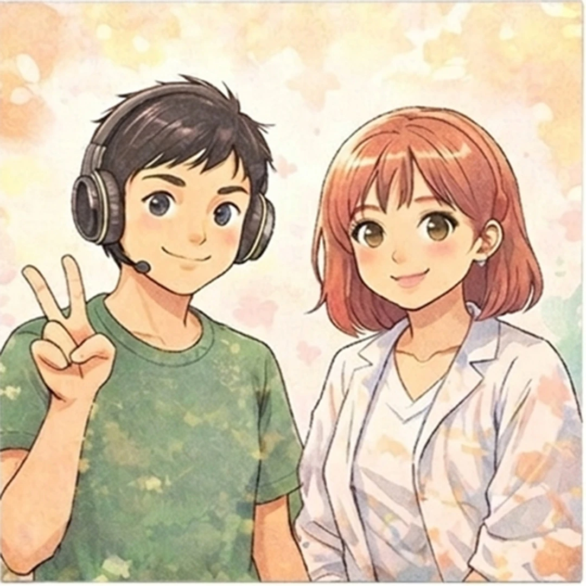

書籍推薦
① 能量療癒｜維安娜‧斯蒂博-希塔療癒系列書籍
透過希塔療癒系列書籍，引導讀者進入深層θ腦波狀態，學習以意念轉化潛意識信念，釋放情緒與限制性模式。
相關著作：
《希塔療癒：世界最強的能量療法》-2020年
《進階希塔療癒：加速連結萬有，徹底改變你的生命！》-2021年
《希塔療癒—信念挖掘：重新連接潛意識，療癒你最深層的內在》-2022年
《希塔療癒—你與造物主：加深你與造物能量的連結》-2023年
《七界：希塔療癒技巧的核心思想》-2024年
《希塔療癒：找到你的靈魂伴侶》-2025年。
③ 顯化理想人生｜自我覺醒入門首選
《遇見生命的無限可能》
帶領讀者從內在探索出發，理解潛意識與人生創造的關聯
《創造生命的奇蹟系列》
進一步拆解信念如何影響現實。兩者結合，能幫助初學者建立完整的顯化與自我覺察基礎，是踏入身心靈領域的重要起點。
⑤ 靈魂藍圖｜生命課題與轉世意義
《靈魂的出生前計畫》
探討靈魂在投生前的選擇與安排，揭示人生挑戰背後的深層意義。透過理解轉世與學習課題，幫助讀者以更寬廣的視角看待困境，從「受害者」轉為「學習者」，提升對生命的接納與理解。
《輪迴八十六次的生命覺醒之旅》
現靈魂長時間演化的過程，讓讀者看見成長並非一世完成，而是累積與蛻變。此類作品適合對輪迴、靈魂進化有興趣者，幫助建立耐心與信任，理解每一段經歷都是覺醒的一部分。
⑦清理與釋放｜回到輕盈狀態
《四句話變幸福！實現奇蹟人生的荷歐波諾波諾》
以簡單可行的方法進行情緒轉化，強調「實際操作」，適合希望改善情緒、關係與生活狀態的讀者。
《零阻力的黃金人生：清理內在的瑟多納釋放法》 提供具體方法清理潛意識與情緒阻塞。透過簡單但深層的練習，釋放壓力、恐懼與執著，回到自然流動的狀態。適合生活壓力大或卡關的人，快速找回內在平靜與行動力。
⑨心理療癒｜自我覺察與整合
《薩提爾的41堂自我療癒課》
從家庭與內在對話切入，幫助讀者深入探索自我、理解人格結構與內在衝突。透過覺察、對話與整合，逐步回到真實的自己。適合想提升自我理解、人際關係與情緒穩定度的人，建立長期有效的心理支持系統。
《成為原本的自己：從榮格心理學出發探索12原型的力量》
結合榮格心理學原型理論，幫助讀者建立更完整的自我認識，適合想深入理解人格與潛意識運作的人。
學習資源推薦
凱特 Kate Sun｜顯化與科學整合教學
凱特為國際希塔療癒導師，同時也是「凱特的好命學院」創辦人，擅長將顯化法則與科學邏輯結合，讓抽象的吸引力法則變得具體可操作。她的內容涵蓋潛意識調整、自我價值建立與人生藍圖設計，適合初學者到進階學習者。透過多平台經營（FB、IG、YouTube），提供系統化學習資源，幫助你從理解到實踐，逐步打造理想人生。

陳禎＋西瓜老師｜實作導向的轉化教學
陳禎與西瓜老師以實作與陪伴為核心，提供多元學習管道，包括公益直播、冥想練習與金錢實驗社群。他們強調「邊做邊轉化」，透過具體練習幫助學員看見內在限制並進行調整。無論是情緒釋放、信念轉換或金錢議題，都能在互動式學習中逐步突破，特別適合需要行動導向與支持系統的學習者。
Mia941 思穎老師｜溫和深層的靈性引導
Mia941 思穎老師以「希塔Fun世界」為核心，結合靈魂探索與內在療癒，帶領學員深入潛意識層面。她的教學風格溫柔且具有引導性，適合對靈性成長有興趣但希望循序漸進的人。透過社群、課程與影音內容，協助學員釋放內在限制，重新連結自我，走向更穩定且自在的生命狀態。
Sofina 老師｜療癒與生活融合實踐
Sofina 老師透過「微笑法則」品牌，將希塔療癒、動物療癒與自然療癒整合，打造貼近日常的療癒方式。她的教學強調輕鬆與持續性，讓學習者能在生活中自然應用。透過LINE、官網與社群平台，提供多元資源與互動支持，幫助學員在穩定中成長，逐步建立屬於自己的療癒節奏與幸福感。